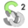

01
Kit de Herramientas
He creado un kit de herramientas booteables que funciona con Ventoy, con un menú personalizado para rescatar ordenadores, gestionar particiones... etc, esto es lo que incluye:
Antivirus
Backups y Clonación de Discos/Sistemas
Sistema Live lleno de Herramientas
Carpeta para dejar tus propias ISOs
Herramientas de Particiones

Rescate de Arranque